Lecture 3: Android Static Analysis
MobSF and manual review workflow for identifying vulnerable logic, insecure storage, weak crypto, and activity hijacking.
Lecture 3: Android Static Analysis
Objective: Understand what to check during static analysis of Android applications.
Static analysis inspects APK source code, manifest entries, and configurations to identify vulnerabilities before runtime exploitation.
1. Automated Analysis with MobSF
MobSF is an all-in-one mobile security framework for Android, iOS, and Windows app assessment.
Requirements:
- Python 3.6+
- Oracle JDK 1.7+
- Command Line Tools on macOS
- iOS IPA analysis supported on macOS/Linux
- Windows static analysis requires Windows host/VM
Installation on macOS:
git clone https://github.com/MobSF/Mobile-Security-Framework-MobSF.git
cd Mobile-Security-Framework-MobSF
brew install python@3.12
/opt/homebrew/bin/python3.12 -m venv .venv
source .venv/bin/activate
python --version # should be 3.12.x or 3.13.x
chmod +x setup.sh run.sh
./setup.sh
./run.sh 127.0.0.1:8000Log in with account mobsf/modsf, then upload insecureBankv2.apk for analysis.
The analysis results show vulnerability-related information such as:
- Static analysis overview results.
- Permission configuration checks.
- Configuration checks in the Manifest file.
- Additional findings that help pentesters evaluate application security.
- Downloadable Java source code after decompilation.
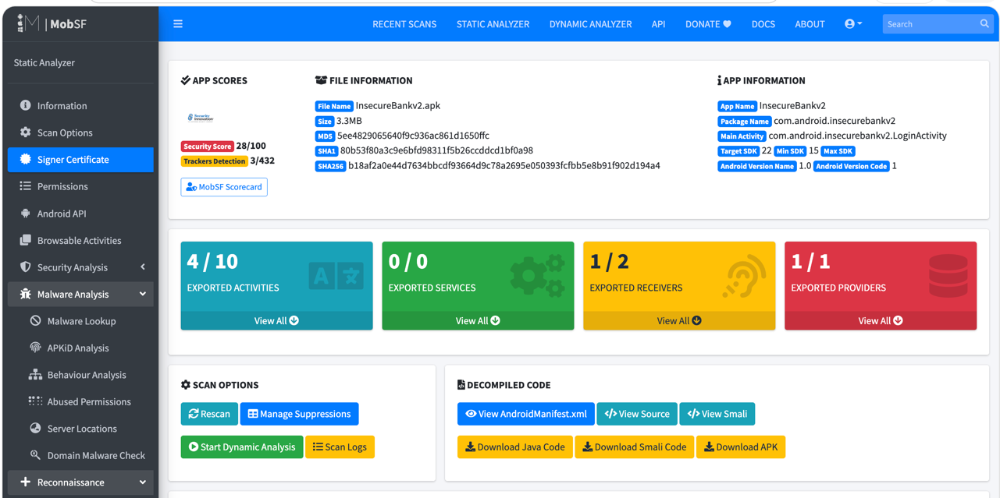
Output note: Static analysis summary view with an overall risk overview.
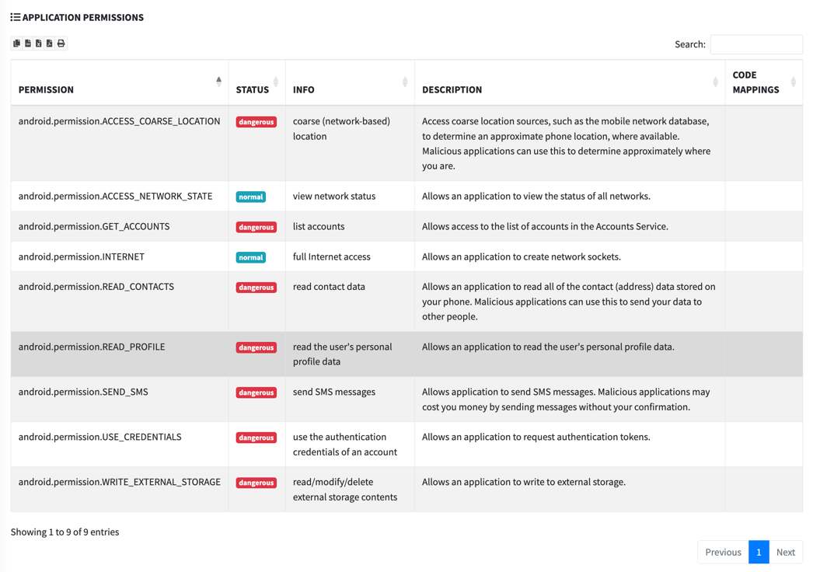
Output note: Permission analysis output highlighting potentially risky app permissions.
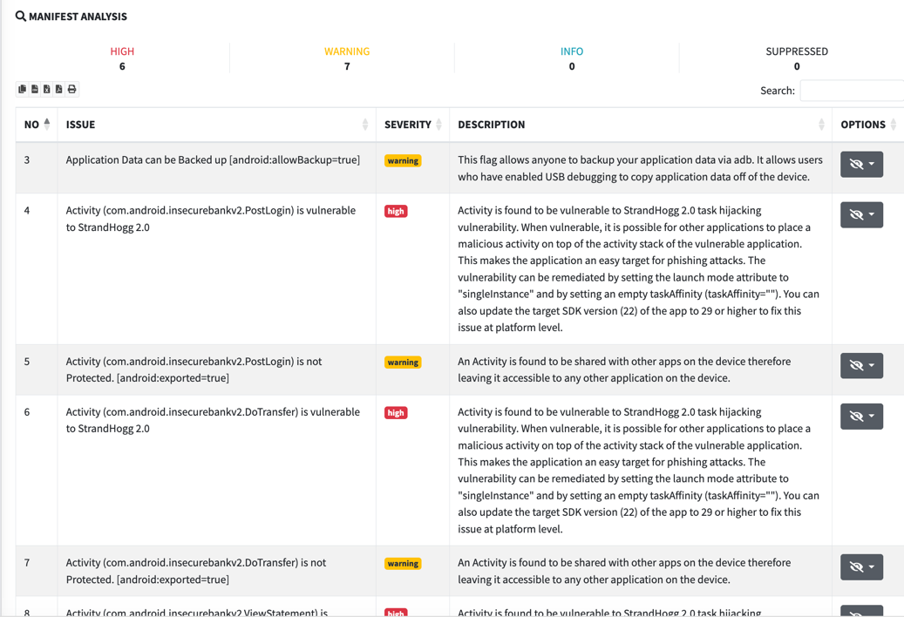
Output note: Manifest inspection output for exported components and security-relevant flags.
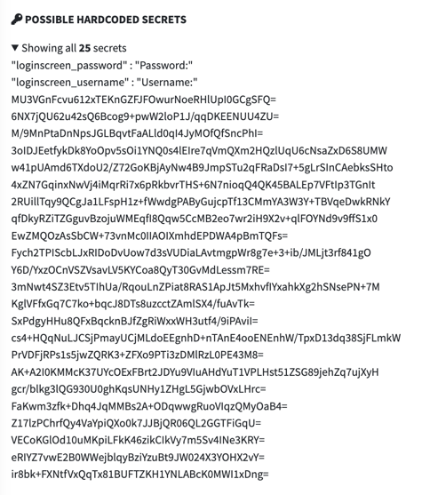
Output note: Additional vulnerability findings that support pentest assessment (part 1).
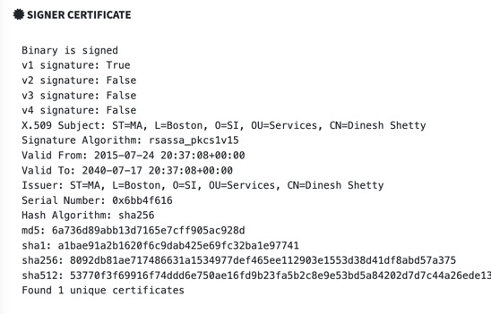
Output note: Additional vulnerability findings that support pentest assessment (part 2).
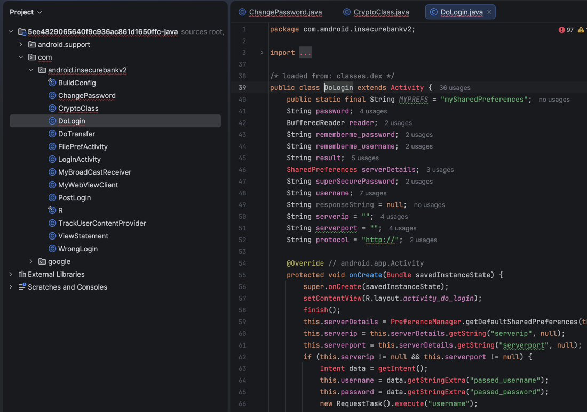
Output note: Decompiled Java source output ready for deeper manual code review.
2. Manual Code Review with Bytecode Viewer
Download Bytecode Viewer from GitHub releases, then open InsecureBankv2.apk.
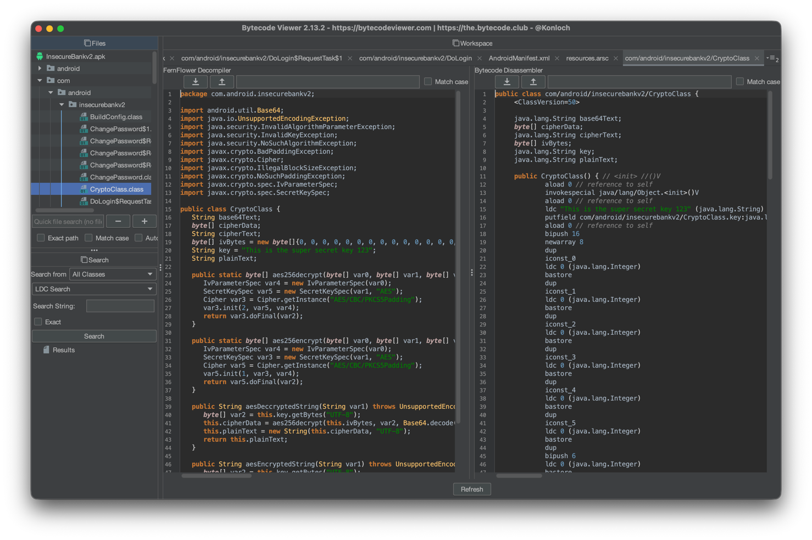
Run the Malicious Code Scanner plugin to surface suspicious patterns.
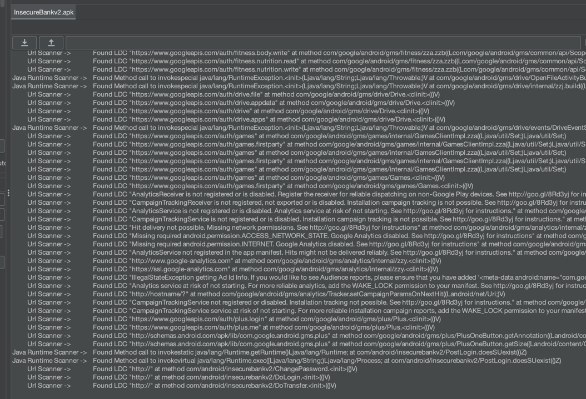
One notable path is com/android/insecurebankv2/DoLogin.
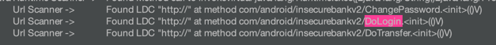

Finding: logging in with devadmin can bypass password validation.
3. Additional Static Checks
Also validate anti-analysis controls and storage behavior:
anti-rootanti-vmcert-pinning- Hardcoded keys/passwords
- Sensitive data in local storage
Database encryption check: log in (dinesh/Dinesh@123$ or jack/jack@123$), then inspect /data/data/<app_name>/databases.
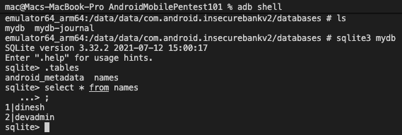
Observed result: no obvious sensitive plaintext values in the reviewed database files.
Plaintext search under /data/data/<app_name>:
grep -r 'string-to-find' $(find)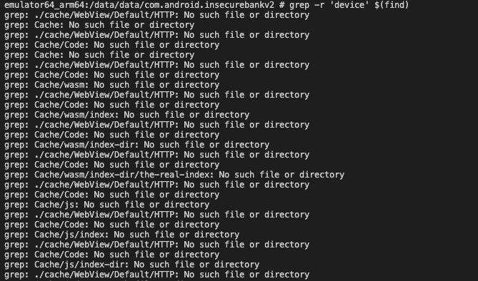
No matching sensitive values were found in this step.
Cookie storage review: check app directories for persistent cookies and attempt session reuse if present.
For InsecureBankv2, no reusable cookie artifact was found.
4. Unencrypted Backup Exposure
Check whether backup is enabled and can expose app data.
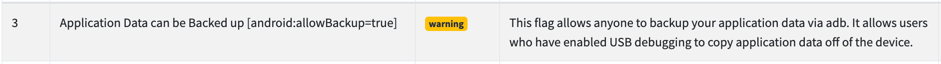
Create backup:
adb backup -apk -shared com.android.insecurebankv2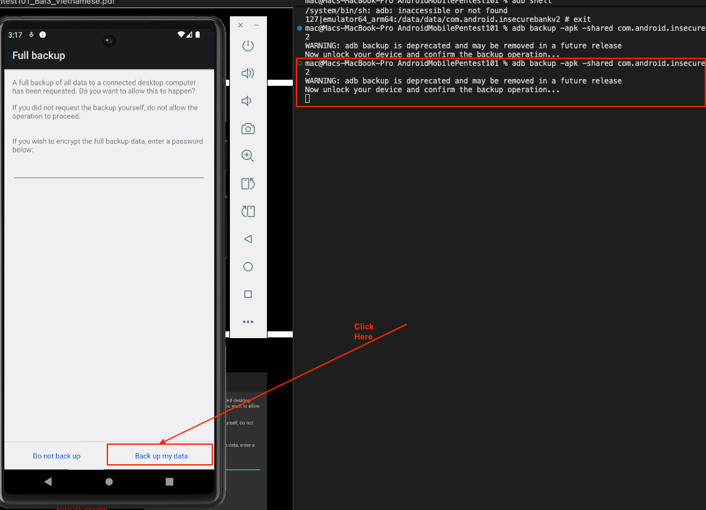
Convert and extract:
cat backup.ab | (dd bs=24 count=0 skip=1; cat) | zlib-flate -uncompress > backup_compressed.tar
tar -zxvf backup_compressed.tar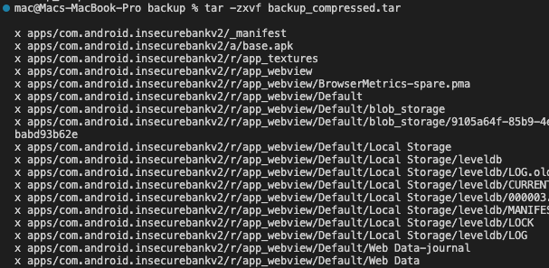
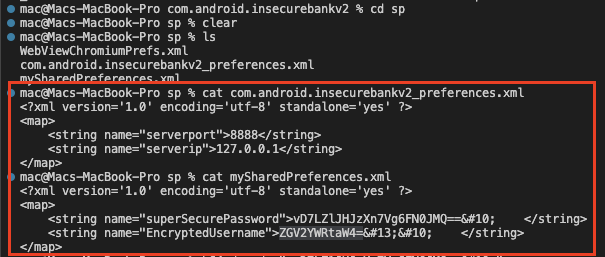
Finding: user credentials and backend IP:Port details can be recovered.
5. Sensitive Data in Logs
Monitor logs from host:
adb logcatThen perform app login actions and inspect output.
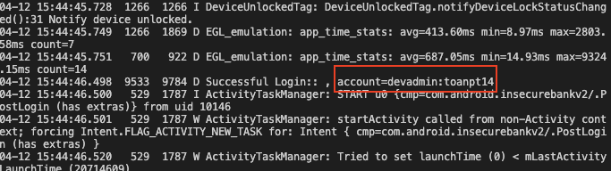
Finding: username:password is exposed in logs.
6. Weak Cryptography Implementation
mySharedPreferences.xml includes encrypted-looking password values.
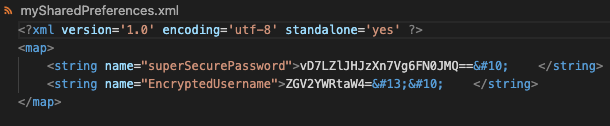
CryptoClass.class reveals weak implementation details.
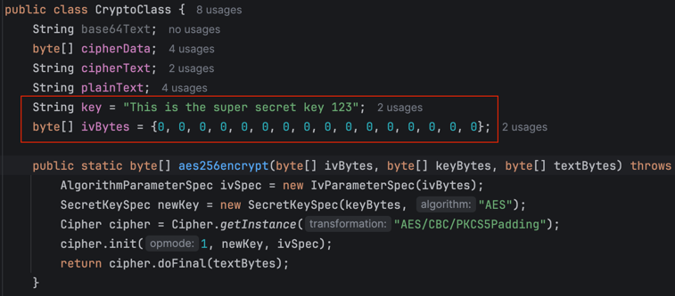
The app uses AES-CBC with a fixed IV. Decrypt sample value vD7LZlJHJzXn7Vg6FN0JMQ==:
#!/usr/bin/env python3
import base64
import subprocess
import sys
key_hex = b"This is the super secret key 123".hex()
iv_hex = "00" * 16
cipher_b64 = sys.argv[1] if len(sys.argv) > 1 else "vD7LZlJHJzXn7Vg6FN0JMQ=="
cipher = base64.b64decode(cipher_b64)
p = subprocess.run(
["openssl", "enc", "-d", "-aes-256-cbc", "-K", key_hex, "-iv", iv_hex],
input=cipher,
capture_output=True,
)
if p.returncode != 0:
raise SystemExit(p.stderr.decode("utf-8", errors="replace").strip())
print(p.stdout.decode("utf-8"), end="")Decryption result: 1
7. Activity Hijacking
If an activity is exported in AndroidManifest.xml, it can be launched directly.
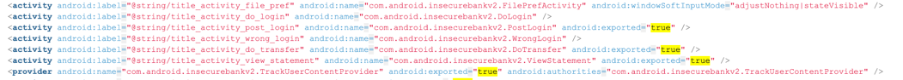
Launch exported PostLogin activity from shell:
am start -n com.android.insecurebankv2/.PostLogin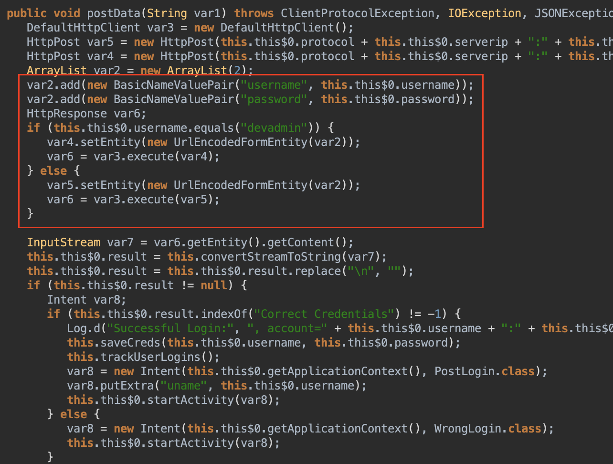
Finding: the app reaches post-login state without normal authentication.